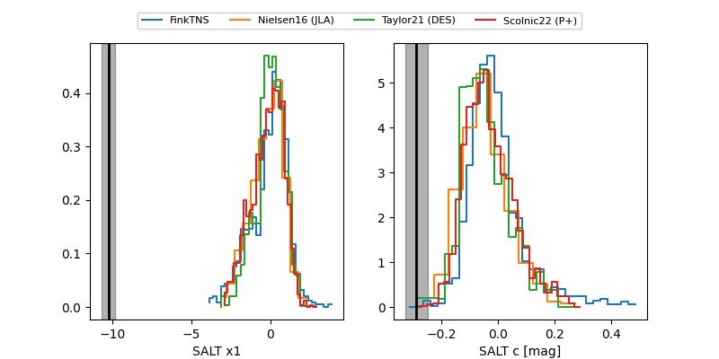

FINK: ZTF25abtzchc
Lasair: ZTF25abtzchc
ALeRCE: ZTF25abtzchc
TNS: 2025ycx
YSE: 2025ycx
ZTF25abtzchc (ztf,fink)
2025ycx (tns,yse)
equatorial (ra, dec) = (298.8381,+67.84311)
galactic (l, b) = (100.3455,+19.26352)

last atlaso=18.80, ztfg=18.24, ztfr=18.05
6 atlaso, 2 ztfg, 1 ztfr detections